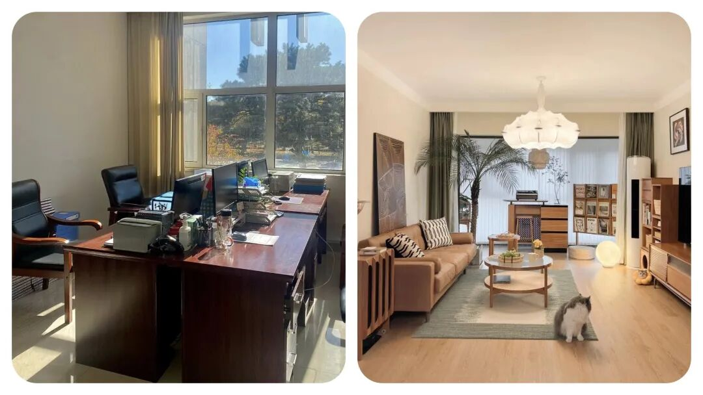
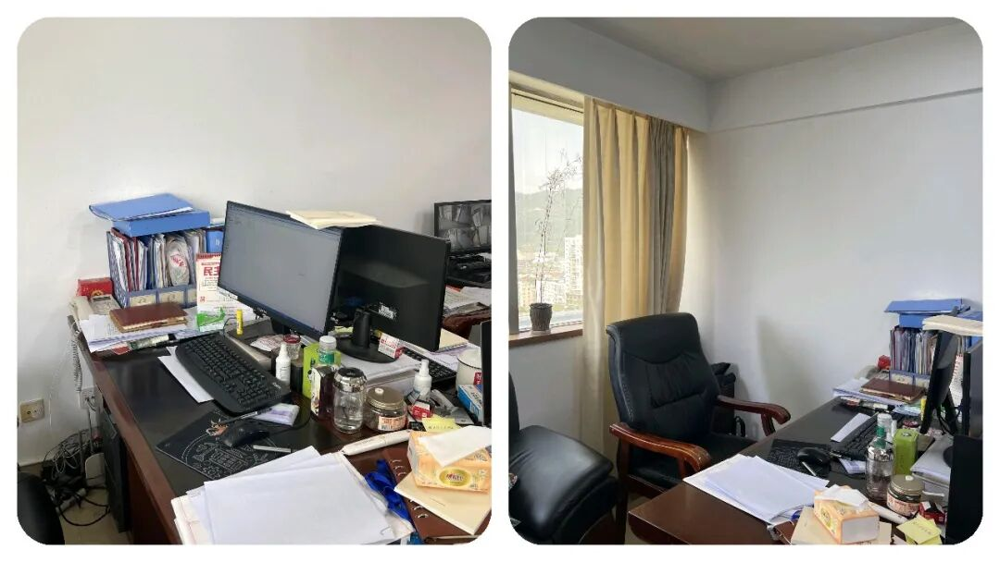
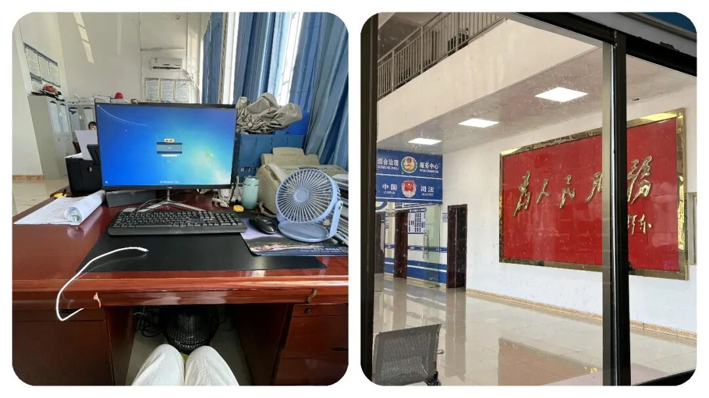
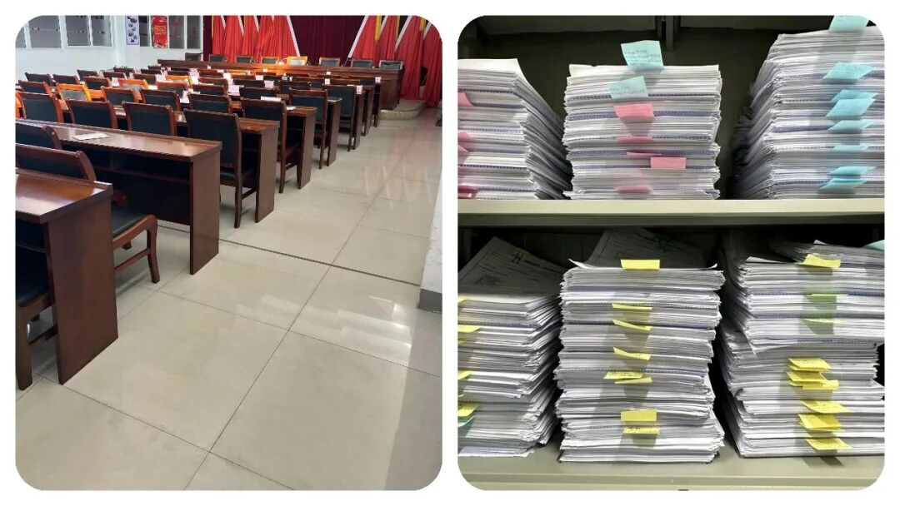

为什么越来越多年轻人，宁愿挤编外也不进私企？真相很现实！
原创
点击关注👉🏻
点击关注👉🏻
田间烟火
在小说阅读器读本章
去阅读
在小说阅读器中沉浸阅读
很多人默认：
没编制、工资不高一个月才两三千的编外岗位，根本没有发展前途
。
但现实却是，
越来越多普通毕业生，挤破头也要进体制内编外
。
明明薪资不算亮眼，为什么偏偏成了普通人的逆袭首选？
有的人只看到表面的工资，却忽略了背后自带的高端平台、行业人脉、空余时间。
那么今天我想和大家来一起深度拆解，
普通人如何靠编外，实现人生逆风翻盘
！

多数人没有985、211的学历，简历被大公司，大企业秒删，秒划走走；
家里也帮不上忙，大学毕业已经掏空父母钱包，后面的事全靠自己顶着。
能力谈不上天赋异禀，想靠什么逆风翻盘？
其实很多人每个月工资到手就花没了，职场混个几年，发现积蓄几乎为零，想改变命运却看不到路。
不少人觉得，普通人想要逆袭，难度就像中彩票。
可有一种方式，这些年慢慢火了起来：“
体制内编外人员
”。
有人疑惑，这岗位薪资也不高、没正式编制，哪里来的出路？
问题在于，很多人只盯着工资看，忽略了这条路的其他潜力。
01
编外岗位的核心优势
自带高端行业平台
最大的亮点就在“平台”
。
体制内部门，多半和整个行业打交道，不管是交通、医疗还是教育。
你说哪个公司能有这么大的平台，能直接接触行业顶层的政策和趋势？
市面上互联网大厂很难做到这一点。
哪怕编外也一样，你待个三五年，锻炼的是认知和分析问题的能力。
大多数小公司，进去了就是螺丝钉，很难学到核心东西。
积累优质行业人脉
再说“人脉关系”这个事
。
在机关单位你干着，合作对象都是一批批中高层。
有的岗位，天天和外单位领导打交道，他们要是真的看中了你，往往会主动拉你跳槽，直接给你安排个不错的位置。
身边就有人原本做着编外，后面被行业企业领导相中，简历往人家案头一放，薪资涨了三四倍不止，还直接进了公司管理层或者技术层。
对比一下，很多私企打拼十年二十年也不见得走到这一步。
更宽松的成长空间
再来一个就是
，
生活节奏也不一样
。
体制内虽然工资不算高，但加班相对少，有保障性住房资格。
大伙可以慢慢积攒，再利用空余时间考证、进修，把自己储备起来。
有的人进了某某委，刚开始只是协助工作，每月拿着五六千，后来用了两年考了个研究生，熟了政策流程，被业内企业挖走，直接当上部门主管，工资翻了好几倍。

02
不是所有编外都适合走这条路
当然，也不是所有体制内编外岗位都自动“镀金”
。
比如有岗位几乎没机会接触行业人脉，只是做些内务杂活，跳出去未必好用。
这种情况在某些城市的基层岗位上尤为常见，几个同事一起干着，每天琐事缠身，几年后还不如外面跳槽一次。
不过，这条路也不是对谁都管用。
比如研发、设计、市场一类的岗位，有的公司晋升和工资完全能靠业绩堆出来，跳槽快、成长曲线高，体制内未必适合这样类型的人。
还有些大城市公租房、福利发放资源紧张，未必都能享受到。

03
怎么选编外岗位？关键看这几点
接着说怎么选岗位，决定成败的几个点不能忽视：
优先对口专业
首先一定要合自己专业或者兴趣，既然大学学了几年，最好还是对口，不然到了单位只能干杂事，又要重新学习，等于时间白搭。
比如学金融的去金融监管部门，环境工程的选环保局，这都是经验升值最快的领域。
看清部门影响力
还有就是，看清所选部门对行业的影响力。
有的岗位虽然标榜体制，但其实只是机关内部的后勤或行政，根本和行业没多大关系。
比如计财、人事类，有时候人脉资源极为局限，后续跳出去难度会很大。
反而行业管理的岗，哪怕是初级职位，也容易积累“可迁移”的经验。
提前做好职业规划
值得注意的是，体制内编外绝大多数都不会是养老岗位。
有人进去了想着混日子，浑浑噩噩几年混到了三十多岁，等重新换轨就会发现，错失好多成长机会。
高效的方法是提前规划好，比如
两三年内积累到哪些资源，后续要不要往行业企业跳
，
或者
努力考进正式编制
。
反过来看一些大企业，像某些地方的通信、能源龙头，凭员工培训体系和行业影响力，也打破了不少“学历出身决定上限”的说法。
就有人科班出身，进了上市公司，五六年里换岗、培训走标准流程，最后也能进核心管理圈。
只是这类机会数量有限，碰上大裁员就压力很大。

🦍
结语
说到底，体制内编外就是个跳板。
普通人如果能利用好平台、人脉和时间，在里面修炼几年，出去跳槽，薪酬和岗位都能提升一大截。
别想着一步登天，核心是抓住眼前的成长空间
。
有意思的是，最近在江浙、山东、广东这些经济发达大省的省会市中心城市，现在应届毕业生都很清醒，宁愿去体制内做编外、先攒平台和人脉，也不盲目进私企，竞争特别激烈，一个岗位几百个人抢。
对比周边三四线小城市，没那么激烈，有的岗甚至招不到合适人。
所以，你到底该不该选这条路？
如果家底普通、专业一般，平台和资源有限，找清楚自己的定位，合理利用体制内编外这个窗口，未必不能逆转局面。
就看你愿不愿意在这几年做足准备，时机来临敢不敢跳出去。
这份选择或许就是很多人翻身的关键一步。
⚠️
都说选择大于努力，如果你刚毕业，会选私企打拼还是编外沉淀
？
说说你的真实想法
～